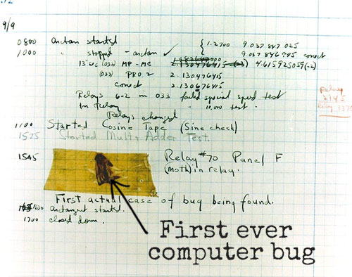

Grace Murray Hopper
Badass Navy Grandma
Grandma COBOL
Badass Facts:
- One of the first programmers of the Harvard Mark I computer.
- Invented the first compiler for a computer programming language BECAUSE SHE WAS LAZY.
- Her programming work led to the development of COBOL
- Earned Earnt the nickname "Amazing Grace" - 'nuff said.
- Popularized the term "debugging" (Literally removed a moth from a computer one time).
